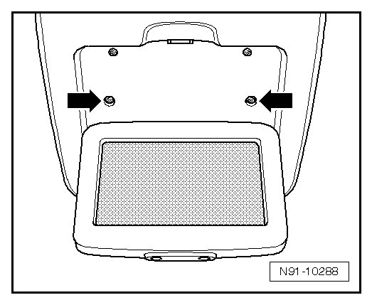
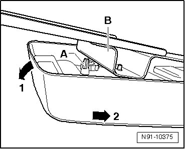
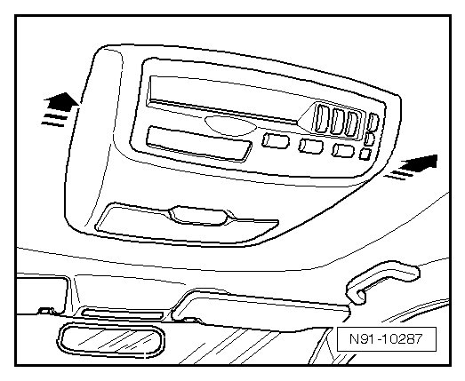

Multimedia System
Multimedia System
The multimedia system is installed in a console under the roof.
Removing
Before starting repair work, perform the following:
- Switch off ignition, switch off all electrical consumers and remove ignition key.
- Carefully fold screen down as far as stop.
- Remove both bolts - arrows -.

- Carefully fold screen back up.
• A plastic pin that must be slid through under the multimedia unit bracket when removing the unit is installed in the unit console. The unit must be pulled down slightly in direction - 1 - and then the console must be slid back in direction - 2 - to prevent the plastic pin from breaking off. Ensure plastic pin - A - passes under reinforcement - B - on bracket.

- Then slide complete unit back in - direction of arrow - and remove it from bracket.

- At the end, the connector must still be disconnected. If necessary, this should be performed by a second technician while the first technician holds the multimedia system securely under the headliner.
Installing
- To install, reconnect connector on multimedia system. If necessary, have a second technician help with this.
• Do not use the same procedure that was used in removal under any circumstances. That is, do not slide the console with the retaining clips into the roof bracket. If this was done, the clips would break off and the console could no longer be secured.
- Hold multimedia unit under roof bracket so that both bolts can be inserted first - arrows -.
- Lightly tighten bolts but do not tighten to final torque.
- With both hands, secure roof console in retaining clip area and engage it audibly in roof bracket with forceful pressure on console.
- Now tighten both bolts - arrows - to final torque.
- Deactivate system lock with electronic anti-theft system. Refer to --> [ System Lock, Deactivating ] Programming and Relearning
- Perform multimedia system function test.